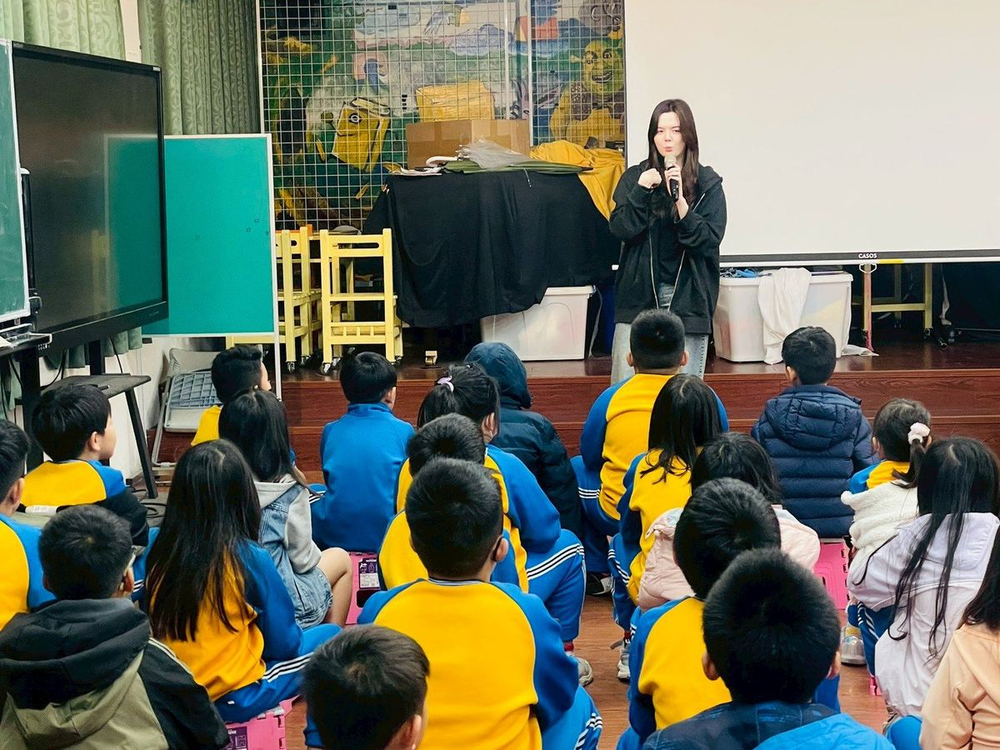
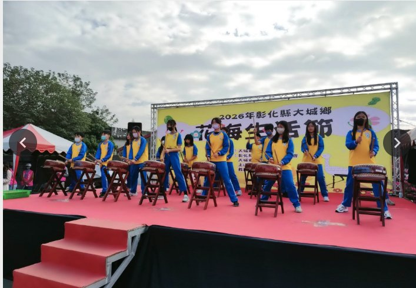
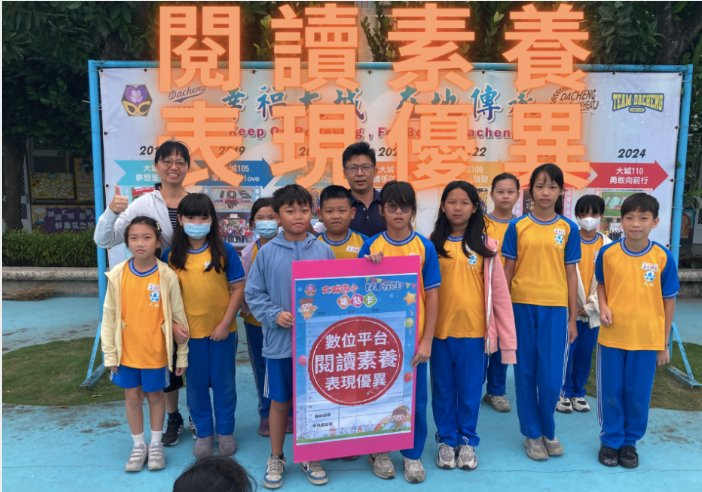
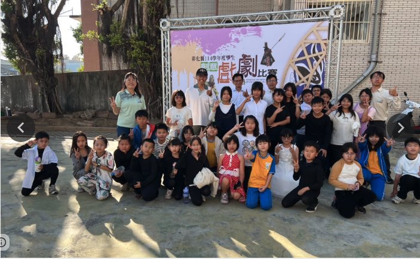

2026-04-30
Taiwanese-language Storybook Storytelling Contest · Honourable Mention
辜筠芷、魏呈叡、蔡念穎（四年乙班）獲彰化縣台灣母語尪仔冊講古比賽佳作。
This page collects what's recent at Dacheng — student honours, school events, and the bilingual partnerships that have shaped our school year. Detailed story write-ups will be added over the coming weeks as photos and reports arrive from the school's Facebook page. 本頁彙整大城國小近期的學生獲獎、校內活動與雙語合作紀錄。詳細圖文故事將於未來數週陸續上線——資料來源以學校粉絲團與官網公告為主。
On March 24, 2026, Dom Jones — Chairwoman of the Advocacy Board at My Culture Connect and a UN SDGs ambassador — spent the day at Dacheng Elementary. Students welcomed her with a clay-drum performance, then ran English-language SDGs discussions with the visiting delegation. The day captured the "越在地，越國際" (the more local, the more international) spirit that runs through every Dacheng lesson. 2026 年 3 月 24 日，人師教育協會倡議委員會主席、聯合國 SDGs 推廣大使 Dom Jones 老師到大城國小進行一日 SDGs 課程。學生以陶鼓表演開場，並以英文與訪賓進行 SDGs 互動討論——把「越在地，越國際」的辦學標語直接搬到現場。
Four recent bilingual stories from this term — the school's own writing, with photos from each event.
本學期四則雙語故事 · 文字為學校原文，照片來自各活動現場。

On March 3, 2026, our foreign teacher, Alyssa, led a fun English speaking class at Dacheng Elementary School. The lesson focused on daily conversations, starting with simple questions like "What's your name?" and "How are you?". Students practiced answering with phrases like "I am great" or "Not bad."
Teacher Alyssa showed everyone how to speak clearly and slowly. Through many fun activities, every child had a chance to speak and practice. This helped them feel more confident using English. At Dacheng, we work hard to make English learning a happy and warm journey for all our students!
2026-03-03，外師 Alyssa 老師帶領大城孩子上一堂日常英語對話課——從 "What's your name?"、"How are you?" 開始，孩子們練習用 "I am great"、"Not bad" 回應。Alyssa 老師示範把話講清楚、講慢，並透過大量互動活動讓每個孩子都能開口練習。我們希望讓每位大城孩子在英文學習路上，都能帶著快樂與安全感前進。

At the colorful "Dacheng Flower Sea Life Festival," our Taiko Drum Team delivered a powerful opening performance! The students showcased their hard work and amazing rhythm, bringing energy to the entire festival.
By performing at this local event, our students gained a great platform to build confidence and connect with the community. Their drumming was the perfect start to a beautiful day. We are so proud of our young drummers for shining bright in the flower fields!
在繽紛的「大城花海生活節」上，大城太鼓隊獻上震撼人心的開場演出！孩子們把練習成果毫無保留地交出來，鏗鏘鼓聲為整場節慶注入了能量。透過社區舞台，孩子們不只練習自信，也與在地建立連結——這群在花海中發光的小鼓手，是大城國小的驕傲。

In December 2025, our students showed great talent in both learning and sports! We won top prizes in the county language competition, which is a very special achievement for our school. Our dodgeball team also won their very first tournament! This shows that our students are great at both thinking and moving.
We also use digital tools to help students improve their reading and prepare for a bright future. By giving awards to our role models, we encourage every child to do their best. At Dacheng, we help every student find their strengths and shine!
2025 年 12 月，大城孩子在學業與運動雙線綻放——縣語文競賽奪下名次，是學校年度榮耀；躲避球隊則在生平首場錦標賽就抱回冠軍，動腦與動身都不缺席。我們也用數位工具陪伴孩子提升閱讀與面對未來的能力；榮譽榜的表揚，是要讓每個孩子都能找到自己發光的方向。

In December 2025, students from Dacheng performed wonderfully at the Changhua Drama Competition. We are proud to share that we won 1st Place in the Stage Play category and 2nd Place in the Puppet Show category.
We want to say a huge thank you to Mr. Xie Fengquan for his professional guidance. We also thank our Parents' Association and volunteers for their amazing support. This experience gave our students a great chance to show their talents and build confidence on stage.
2025 年 12 月，大城孩子在彰化縣戲劇比賽中表現驚艷——舞台劇類獲第一名、綜合偶戲類獲第二名。感謝謝豐全老師專業指導，也感謝家長會與志工的全力支持。這次經驗讓孩子們在大舞台上展現天賦、建立自信。